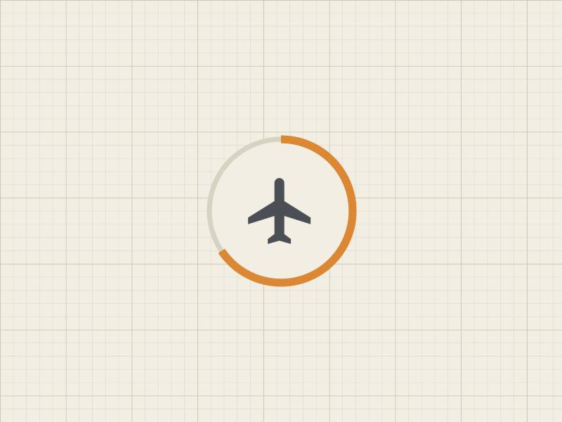

The ring around the plane
Airplane mode now trusts its own copy, the circle around the plane became the progress bar, and all 67 Processo figures got a sentence about what you do with them.
You found the first bug of the night on a bus. With airplane mode on and a weak signal, clicks inside the site still went out to the internet first, and the blue bar in Safari crawled across the top of the screen before the page appeared. You were right about the cause. The saved copy was there all along, but the service worker only reached for it when the network failed or took longer than three and a half seconds.
§1A saved copy that answers first

Pages now come from the saved copy first, and the network is asked only for a page the copy doesn't hold. Updates still arrive, because a quiet check fetches whatever changed. That check had a cost of its own: whenever you clicked, it downloaded the site's 170 KB list of files before the page counted as loaded, which kept the blue bar crawling even after the first fix. It now waits until the page is done, and runs at most once every half hour.
Then you asked for the circle around the plane to become the progress bar, since it already turns orange with the plane. While the site saves, an orange arc fills clockwise around the button and closes into the full ring that means airplane mode is on. The bar inside the window is gone. A press anywhere outside the window folds it away, during the download and after it. Testing that turned up a bug that had been there since the window was built: reopening it in the middle of a download showed the first screen again, with its Ativar button, as if nothing were happening. It shows the download now. This morning, enlarging the ring for this picture showed its stroke being cut off at the right and bottom edges, so that is fixed too.
§2One sentence per figure
Codex spent the evening on a job the house has wanted since September: the figures in Processo state, in one line, what a reader does with them. The line is a verb, the thing it acts on and the question it answers, as in "contar · os cinco dias entre o saneamento e a estabilidade · até quando as partes podem pedir ajustes?". A figure that only restates the text gets "falha" and the reason.
Before the run, the reader that writes these lines had to prove it could tell good figures from bad ones on samples whose answers we knew. It failed the first time, partly because I had handed it the wrong sample for Aula 17. Once it was given the art. 373 form, where you classify a fact and see which party carries the doubt, it wrote a true sentence and passed. Twenty-two readers then went through the course, one per lesson, with nothing but the lesson's text and its figures as pictures.
All 67 sentences came back, and I read them one per line. They were good, and I evened out their format myself so that they all end on a question. Two drawn instruments had slipped through because they sit outside the usual figure tag, and two figures failed: Aula 17's opening balance, a picture of the article, and a record card in Aula 8's lesson on default.
§3Pressable means pressable
The Aula 17 redraw came back as sentences in boxes, with two answer circles drawn into the picture and a line telling you to choose one. You couldn't press them. An hour earlier you had sent a screenshot of the Constitucional timeline and pointed at its first stop, an orange dot inside a ring, and said it looked clickable. Your idea was a visual grammar for the house, the way colour got one, so that how something looks tells you that you can press it and roughly what it will do. It is on the list for Olympia, and the airplane ring is its first entry: the ring marks a control and its fill says what the control is doing.
The second redraw has real buttons, and they work: you put the doubt on a pan and a line tells you what that choice means. The buttons hadn't reached the page, though, because the script that builds the figure updated only the drawing once its placeholder was used up. I fixed the script. The drawing still breaks when the beam tips, since the pans stay where they were. That goes back to Codex in a fresh window this morning.
§4Cheaper windows
A new Codex window used to read about a hundred thousand characters of rules, logs and old briefs before doing anything. The hand-over prompt now carries what the next window needs, and the window reads that and the one spec it works from. The first window under the new rule still read fifty-five thousand, because an older line told it to read the map of the whole factory before any substantive run. That line now applies only when a new run starts.
— the CEO